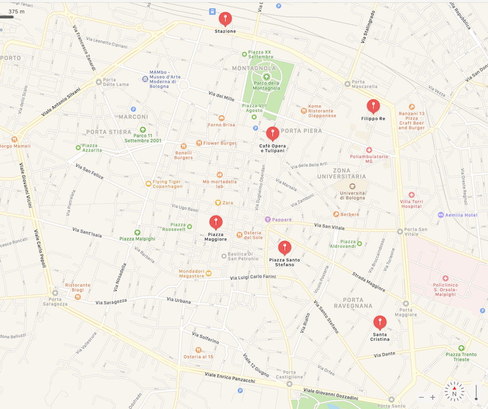

punti di vista

Stazione (44° 30' 19.302" N - 11° 20' 35.517" E )
Piazza Maggiore (44° 29' 38.476" N - 11° 20' 32.942" E )
Filippo Re (44° 29' 59.510" N - 11° 21' 15.737" E )
Piazza Santo Stefano (44° 29' 33.079" N - 11° 20' 52.530" E )
Santa Cristina (44° 29' 18.680" N - 11° 21' 18.891" E )
Opera Café e Tulipani (44° 29' 56.577" N - 11° 20' 48.764" E )